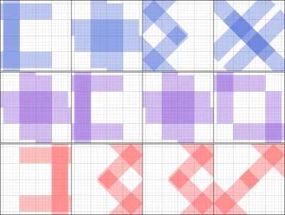
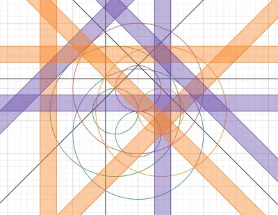
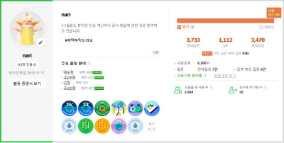
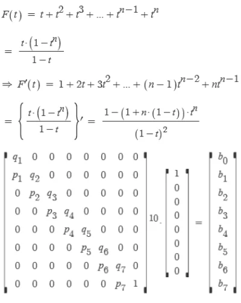
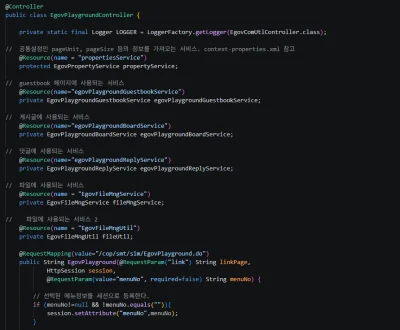
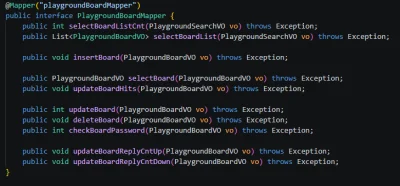
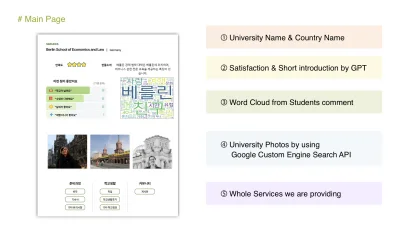
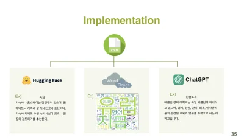

수학적 사고와 데이터로 증명하며,
최적의 흐름을 설계합니다.
수학과 복수전공으로 시작해 컴퓨터의 매력에 빠져 백엔드 개발자를 준비하고 있습니다. 저는 단순히 돌아가는 코드를 작성하는 것보다, '왜 이렇게 동작하는가'를 파고들어 원리를 이해하는 것을 즐깁니다.
이러한 성향은 일상에서도 드러납니다. 목적지까지의 경로를 미리 구상하며 신호등 주기까지 외워 동선을 최적화하고, 짐을 쌀 때도 이동 횟수를 줄이는 배치를 고민합니다. 게임에서도 마찬가지입니다. 단순한 공략 암기에 그치지 않고 '이 처리가 최적일까?', '다른 방법은 없을까?'를 고민하며 데이터를 기반으로 논리적으로 사고합니다. 신뢰할 수 있는 결과물을 만들어내는 개발자가 되겠습니다.
Play & Think
게임 속에서도 원리를 파고드는 탐구자


단순한 공략 암기를 넘어 '이 처리가 최적일까?'를 고민합니다. 게임 내 기록을 남길 때도 단순히 결과만 보여주는 것이 아니라, 당시의 세팅과 조건을 함께 증명하여 신뢰성을 확보합니다. 또한, 주어진 자원을 바탕으로 목표 달성에 필요한 최소한의 조건을 역산하여 최적의 도전 난이도를 찾아냅니다. 더 나아가, 복잡한 협동 레이드에서는 공략을 분석해 수학적으로 그래프를 그리고 동선을 최적화하며 논리적 사고력과 응용력을 길렀습니다.
수학과 시뮬레이션의 교차 검증 (지식iN)


지식iN에서 별신 등급을 유지할 정도로 꾸준히 수학 답변을 하고 있습니다. 게임 확률 질문을 마주했을 때는 행렬과 수학적 도구를 활용해 정확한 값을 계산하고, 파이썬 시뮬레이션을 통해 동일한 결과가 나오는지 교차 검증하여 신뢰도를 높인 경험이 있습니다. 답변을 적기 전 항상 정답 여부를 검증하는 습관이 있으며, 논리적 검증을 통해 확실한 답을 도출하는 것을 즐깁니다.
Journey
전자정부 표준프레임워크 기반 웹 게시판 시스템
인턴십 경험 | 2026.05 ~ 2026.07 (2개월)


- 1인 독학 및 환경 구축: 담당자의 제안으로 시작된 과제를 완수하기 위해, 매뉴얼과 사례만 참고하여 아파치 세팅부터 MySQL DB 스키마 생성 및 보안 설정, DDL/DML을 활용한 초기 데이터 적재까지 스스로 수행했습니다.
- 데이터 흐름 파악: 화면의 URL과 이클립스 문자열 검색을 통해 코드를 역추적하며 Controller → Service → Mapper(MyBatis) → VO → DB로 이어지는 스프링 MVC의 핵심 흐름을 파악했습니다.
- 핵심 기능 구현: 파악한 구조를 바탕으로 기존 게시판과 동일한 구조의 게시판을 새로 구현하며 원리를 체득했고, 세션 기반 로그인/회원가입, 파일 업로드(권한 제어), 댓글, 검색, 페이징 처리 등을 직접 구현했습니다.
교환학생 수학보고서 정보 공유 웹페이지
대학교 캡스톤 디자인 (A+) | 2023.03 ~ 2023.06 (4개월) | 팀장 및 데이터 처리


- 데이터 파이프라인 구축: 셀레니움을 활용해 문서(doc, hwp, pdf)를 수집하고, 파이썬 알고리즘을 통해 필요한 항목을 추출하여 CSV로 변환 및 DB 설계를 진행했습니다.
- 데이터 파편화 극복: 예전 파일과 최신 파일의 문서 포맷이 달라 데이터 추출이 어려운 문제를 겪고, 문서 내 모든 텍스트를 추출한 뒤 중복을 제거하는 방식으로 해결했습니다.
- 협업 및 유지보수 고려: 팀원이 겪던 댓글 API 연동 문제를 분석해 해결을 도왔으며, 추후 구글 폼으로 데이터를 제출받아도 바로 적용할 수 있도록 데이터 가공 코드를 설계했습니다.
Attitude
"이유 있는 코드"를 지향합니다
당장 눈앞의 결과물을 내는 데 급급해 원리와 이유를 놓치고 넘어가면, 다음에 비슷한 문제를 만났을 때 응용할 수 없습니다. 저는 코드뿐만 아니라 게임의 공략을 볼 때도 이해가 되지 않는 부분은 원리와 근거를 직접 찾아내어 스스로 납득할 때까지 파고듭니다. 이렇게 질문하고 검증하는 과정을 통해 원리를 체득하며, 이를 바탕으로 새로운 문제에 응용하는 힘을 기릅니다.
문제 해결을 위한 몰입과 회복
문제가 생기면 해결할 때까지 밤을 새우며 몰입하는 편입니다. 다만, 막히거나 지칠 때는 혼자만의 시간을 가지며 좋아하는 게임이나 음악으로 머리를 식힙니다. 혼자만의 시간을 통해 에너지를 충전하고, 다시 문제 해결에 집중하는 방식으로 지속 가능한 개발을 지향합니다.